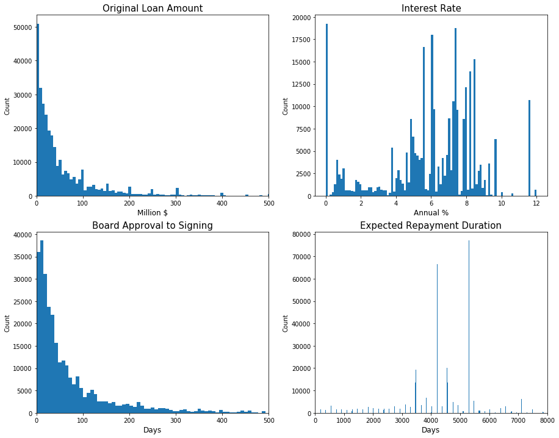
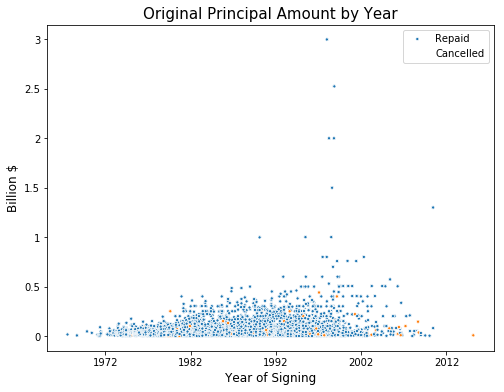
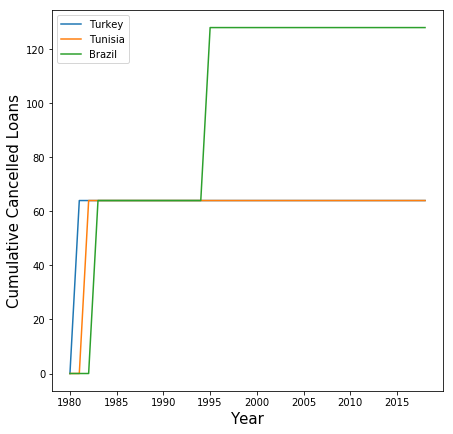
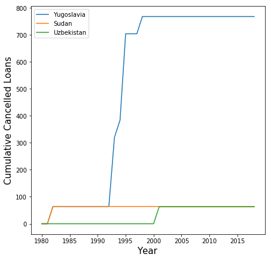
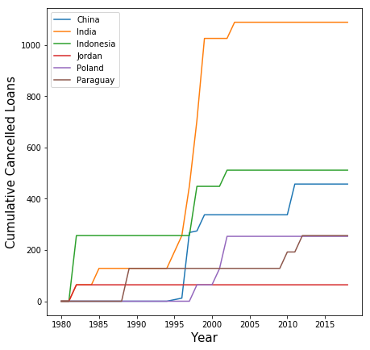
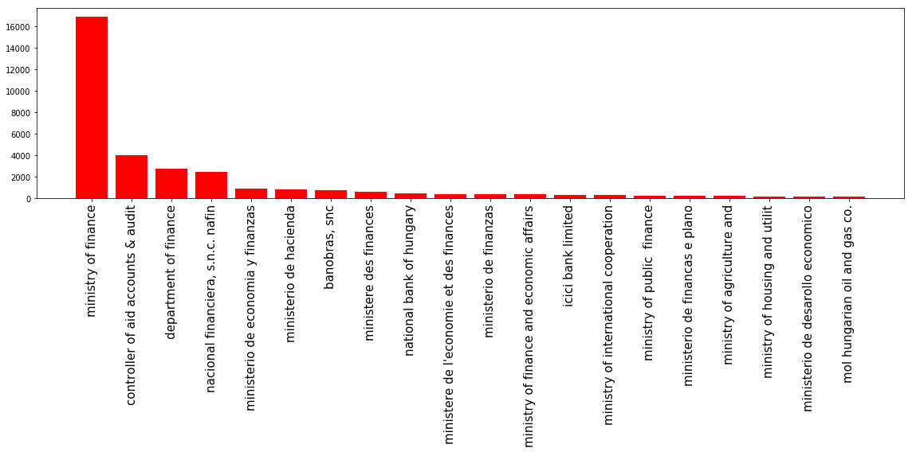
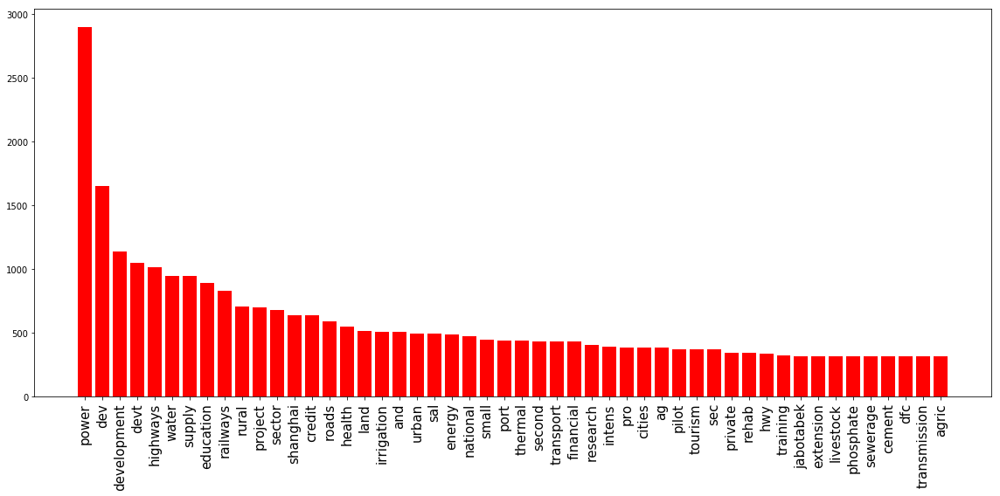
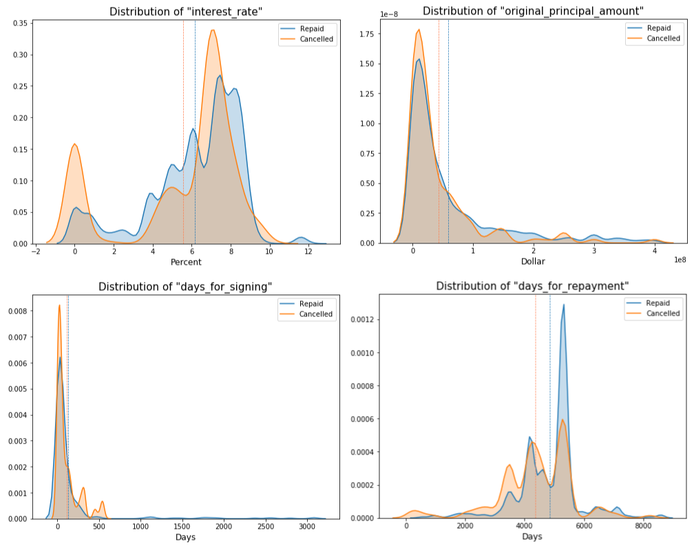
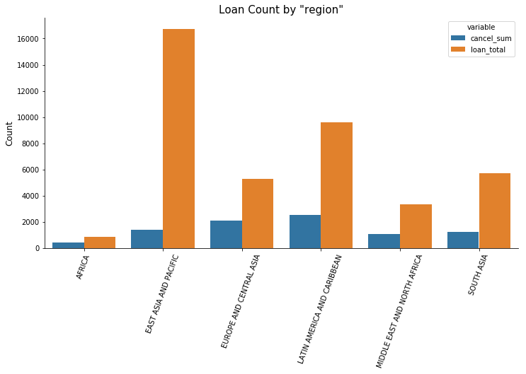
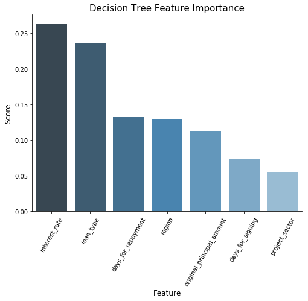

The International Bank for Reconstruction and Development (IBRD) is the world's largest development cooperative working with the World Bank to service middle or low-income countires. One of the main services is loans for the countries to carry out diverse projects such as construction, energy, road, or education. Historically there have been about 758K cases since the group was formed in 1947 for redevelopment after WWII. Most of these were disbursed and repaid, however, some of them were cancelled. The loan cancellation is a loan that was ready to begin but widthdrawn before disbursement. Considering the scale of loan amounts, cancellations would cause a tremendous waste of time as well as financial cost. For that reason, this project focused on analyzing cancelled loans and building a predictive model to prevent or prepare for such loans.
While there are officially 33 columns, the project took steps to filter important features and cases mostly in the first half. The data dictionary can be found at World Bank Finance, which could help to understand the overall dataset structure. In addition, the complete code is on the Github with the PowerPoint slides and the writing.
The dataset can be downloaded from World Bank in CSV or Socrata through API. I chose API for the project due to its capacity of fast querying. Since the goal is to analyze the modern trend, I ranged the years from 1980 to the present based on loan closed date. Then, the following libraries were called as Python was used for the project.
Along with API, pickle is very useful to store and access data. The following functions are to download the IBRD data via API with query and store it in pickle format. The query applied is years after 1980 and loan status equal to either repaid or cancelled.
The dataset became 326,674 cases with 18,138 cancelled loans and the rest being repaid loans. This imbalanced issue would be handled for modeling later. There are some columns containing null values, and they were handled differently as they came in diverse form.
First, each column was examined to see if it had no value or a single value. In this case, the entire column was simply dropped. Such columns were due_3rd_party, sold_3rd_party, and some more. Next, id columns such as project_id was dropped. The rest of columns had a small portion of null values, and they were examined to see if these null values were distributed over repaid loans and cancelled loans in the similar ratio. That is, there should be more null values in repaid class because repaid loans are much more.
After then, rows having null values were dropped in the order of column importance. Some columns had no longer null values after some rows were dropped based on other important columns. Unlike most of the columns, interest_rate was filled with its mean since the values are distributed over a certain range. The mean values were calculated by country due to the nature of the dataset. However, date related columns like agreement_signing_date possibly in digit had to be dropped since they went by individual loan.
Before moving onto the next, I could extract useful information from date columns. One was how many days taken to sign the loan and the other was how many days taken for repayment. Fortunately, cancelled loans still had last day for repaying so the two columns were created in the code.
The average loan duration was 6.06 years from signing date to closing date. The statistics of the other numerical features were found as follows.
| Feature | Mean | Std | Min | Median | Max |
|---|---|---|---|---|---|
| interest_rate (%) | 5.98 | 2.80 | 0.00 | 6.18 | 12.00 |
| original_principle_amount ($M) | 62 | 111 | 0 | 29 | 3000 |
| days_for_signing (Days) | 116 | 279 | 0 | 38 | 3083 |
| days_for_repayment (Days) | 4304 | 1443 | 0 | 4202 | 8950 |
Except for interest_rate, the rest of the numerical features were highly skewed. This was not surprising because there were so many small projects when only a few were huge in scale. These skewed distributions could be again confirmed with histogram.
As seen below, original_principle_amount and days_for_signing followed Power Law distribution. While days_for_repayment looked more of random, interest_rate could be bell shaped if zero interest loans were not considered. Transformation was not necessary because the goal was not regression of these variables. But looking at the correlation matrix of them was helpful to understand their relationships.
| Feature | interest_rate | original_principle_amount | days_for_signing | days_for_repayment |
|---|---|---|---|---|
| interest_rate | 1.00 | -0.17 | 0.07 | 0.12 |
| original_principle_amount | -0.17 | 1.00 | -0.06 | -0.06 |
| days_for_signing | 0.07 | -0.06 | 1.00 | 0.04 |
| days_for_repayment | 0.12 | -0.06 | 0.04 | 1.00 |
There was a quite relationship between any two of them, which was good news because this meant they are Independent from each other. In other words, they would play their own role for the dependant variable without interfering with each other.
The scatter plot above was drawn to see if there would be any time series issues as well as to see how the classes were distributed. It seemed like the number of loans were decreasing on the plot, but this was simply because the data was queried by closed date. Recalling the average loan duration, the recent loans have not been closed yet.
With that in mind, loans were distributed over two classes without any specific time patterns. In addition, I could spot the outliers in terms of loan amount to be seen on the upper side, none of which was a cancelled loan. I realized cancelled loans are not extremely huge in dollar amount, therefore, I removed the outliers.
| Feature | Unique | Top | Frequency |
|---|---|---|---|
| borrower | 713 | Ministry of Finance | 39100 |
| country | 109 | Indonesia | 29880 |
| loan_type | 8 | Pool Loan | 140768 |
| project_name | 2849 | Education II | 1796 |
| region | 6 | Latin America and Caribbean | 48158 |
Categorical features also showed some skewness in that certain values were dominant in share. However, the real problem was that some of them had too many values over hundreds up to thousands. I would use country for analysis but would eventually drop before modeling because the project was to find trends in the pure sense of loans. The rest, borrower and project_name, would be processed by clustering the words contained in each of them, thus, they would need a further investigation.
The target variable was the loan status either repaid or cancelled. As long as I could analyze the difference between the classes and build a predictive model, I wouldn't need to include all the observations. Therefore, this step focused on which data could be excluded so I could concentrate on the necessary data. As the data were heavily influenced by country, I invetigated them in that sense.
| Country | Total Amount ($B) |
|---|---|
| Mexico | 1610.01 |
| Brazil | 1609.47 |
| Indonesia | 1576.98 |
| India | 1257.13 |
| Turkey | 856.75 |
The top three countries had huge amount of loans and it quickly dropped. Then, the question became what cancellation rates would be by country. To answer it, there were tens of countries that didn't cancel any loan such as Bahamas, Chad, Estonia, Ireland, Malawi, South Africa, Togo, and so on. However, these countries also didn't quite borrow that much having a small number of loans.
| Top 5 Repaying Countries | Repay Rate (%) | Top 5 Cancelling Countries | Cancel Rate (%) |
|---|---|---|---|
| Turkey | 99.5 | Yugoslavia | 66.7 |
| Tunisia | 99.4 | Uzbekistan | 53.8 |
| Brazil | 99.2 | Sudan | 50.0 |
| South Korea | 99.1 | Sri Lanka | 25.1 |
| Malaysia | 99.0 | Dominica | 24.3 |
The chart was numbered with the countries that had at least one cancellation with the assumption that they had borrowed enough number of loans. They are all quite big countries, however, their economic situations were a lot different. The top five cancelling countries shed a light on which data I should focus on. Generally speaking, these countires were in serious economic troubles. Especially, Yugoslavia folded in the 90s, giving an idea about the Soviet Union. With the hypothesis that countries would cancel loans when economy is bad, the following code extracted the years of loans cancelled by country.
Number of loans by year from 1980 to the present was returned by the function in a list, which was plotted cumulatively as follows. Note that the years are based on closed date, resulting in some time lagging from the real economic situations.
The top three countries had loans cancelled in specific years like the early 80s and in the 90s. The top three most loan cancelling countries showed a similar pattern.
Sudan cancelled loans in the early 80s and the loans cancelled by Yugoslavia soared in the early 90s. I found it interesting that they cancelled loans in certain years and did not at all in the rest of years. To confirm the hypothesis about the relation between loan cancellations and economic recessions, I drew the plot for various countries over wide regions.
As seen on the plot, there were substantial increases in the early 80s and the 90s in general. According to the research, there was a global recession in the early 80s. The biggest event in the 90s should be the dissolution of the Soviet Union, which undoubtedly had a great impact on the global economy.
The functions above would finalize the dataset. With the data reduced to 41,614 cases, I would selectively analyze the loans involved with economic recessions.
As found in Data Exploration, borrower and project_name were problematic in that there were too many different values. They would need to be categorized into countable groups to be qualified for category features. To get an idea how to group them, I took the first step by simply counting words.
Starting with borrower, Ministry of Finance was dominant accounting for about one third. However, I quickly found out that the rest were actually very similarly titled such as Department of Finance or Ministerio de Hacienda, just in different word or language. This indicated that there wouldn't be any meaningful difference however they could be grouped. For that reason, I decided not to use the feature.
Unlike borrower, there were dictinctive differences among values in project_names. I had to do some manual jobs to create a dictionary of 15 project sectors as keys and their variations as values. For example, project sector power could be expressed as 'pw', 'gas', or 'energy'. The following function would classify projects in the 15 groups.
And the categorical data became the three on the table.
| Feature | Unique | Top | Frequency |
|---|---|---|---|
| loan_type | 7 | Pool Loan | 17572 |
| region | 6 | East Asia and Pacific | 16752 |
| proejct_sector | 15 | Other | 13717 |
There were remaining four of the numerical features and three of the categorical features so far. Even though useless features were filtered, the rest of them should still need investigation to see if they would be really useful for classification.
Since I found out the numerical features were not normal, I would use Mann-Whitney U test instead of T test. If the test result came as the distributions of repaid and cancelled loans are different, the feature would be useful to classify them.
None of them had the same distribution for repaid and cancelled with almost zero P-value, which indicated that all of them could make contributions to classifying repaid or cancelled loans. Another interesting point was that there were a quite large number of zero interest or zero amount loans.
The interest rate in particular needed an additional attention because the average interest rate of cancelled loans was lower than repaid loans. This didn't make sense because it would be more reasonable to cancel loans with higher interest rates.
| interest_rate(%) | Repaid | Cancelled |
|---|---|---|
| Mean | 6.17 | 5.55 |
| Mean (without 0%) | 6.42 | 7.00 |
| Median | 6.90 | 6.93 |
| Median (without 0%) | 6.85 | 7.07 |
Without the zero interest loans, both the mean and median of cancelled loans became significantly higher than repaid loans, which made more sense. In addition, the zero interest loans would probably be related with zero amount loans. Recalling that there were service related projects like education, not all the projects would entail monetary values.
| Feature/Median(days) | Repaid | Cancelled |
|---|---|---|
| days_for_signing | 36 | 45 |
| days_for_repayment | 5294 | 4564 |
As for days related features, it took longer days for cancelled loans to be signed. This might mean that these loans already had such problems in the beginning that they needed more reviews even after the board approval. It was not surprising that the repayment duration of cancelled loans was longer than repaid loans, considering their average amount.
In summary, there were quite many zero interest and zero amount loans for some projects. Without them, borrowers usually cancelled high interest loans which probably had taken more attentions for finalizing. But large projects relatively survived economic recessions, suggesting that these projects were prioritized for long-term plans.
I used bar plot for categorical data to compare classes. First off, there were 7 loan types available and some of them showed distinctive patterns. Although 'B-loan' and 'FSL' accounted for a small number, they would help to recognize cancelled loans because all of them were cancelled. They are related with cofinancing and spread, respectively, which could expose loans to variabilities whenever external factors become instable.
African countries borrowed relatively less loans, but the cancellation rate was much higher. Countries in Europe and Central Asia also showed a high cancellation rate, and this should be related to the Soviet Union since these countries were the members. On the contrary, countries in East Asia and Pacific mostly executed their loans. The rest appeared to be quite similar in cancellation.
| Country | Cancelled(%) | Country | Cancelled(%) | Country | Cancelled(%) |
|---|---|---|---|---|---|
| Rehab | 58.5 | Finance | 49.8 | Emergency | 48.0 |
| Agriculture | 37.3 | Education | 33.7 | Water | 32.9 |
| Construction | 31.3 | Industry | 28.6 | Road | 22.4 |
| Other | 16.7 | Power | 14.3 | Environment | 8.8 |
| Transport | 8.6 | City | 8.4 | Health | 6.4 |
The 15 sectors grouped by the earlier processing were widely ranged. While 'Rehab' projects were cancelled more than half the cases, 'Health' projects mostly continued. Between the two, the rest seemed like they had their own cancellation rates, thus, the clustering was reasonable.
Since all the numerical and categorical features appeared to have a power to classify the loans, I decided to keep all of them at this point. Depending on model performances, some of them could be dropped though.
Previously, I found out the imbalanced class issue, having much more number of repaid loans. This could cause a bias when modeling that it would always predict repaid. In order for a model to have a balanced power of prediction, the classes should be equally or similarly given to the training set. This process should be done to the validation set too.
Out of the total 41,614 cases, the training set was sized 14,074 with 7,037 repaid loans and the same for cancelled loans. In other words, it had to drop a lot of repaid loans to base the size on cancelled loans. The validation set sized 3,520 was split in half for the two classes too. With the number of each class set equally, I chose Gaussian Naive Bayes as the baseline model.
| Naive Beyes | Predicted Repaid | Predicted Cancelled |
|---|---|---|
| True Repaid | 338 | 1422 |
| True Cancelled | 217 | 1543 |
The baseline model didn't do a good job with cross validation accuracy 0.54 (+/-0.01). Especially, it failed to recognize repaid loans correctly resulting in 0.47 for f1-score. When there could be many reasons for this poor performance, the assumption of Naive Bayes model must have not been met that variables are Independent each other. However, the performance was improved remarkably with other models.
| Decision Tree | Predicted Repaid | Predicted Cancelled |
|---|---|---|
| True Repaid | 1757 | 3 |
| True Cancelled | 0 | 1760 |
Decision Tree only failed 3 cases having almost maximum accuracy and f1-score. SVC also performed very well not even misclassifying any of them. An interesting point was Gradient Boosting didn't do better than Decision Tree.
| Gradient Boosting | Predicted Repaid | Predicted Cancelled |
|---|---|---|
| True Repaid | 1643 | 117 |
| True Cancelled | 46 | 1714 |
Its accuracy was 0.96 (+/-0.02) and f1-score was 0.95. This was still impressive, but still worse than Decision Tree. Interestingly enough, Gradient Boosting is considered as a more complicated model than Decision Tree. That is, a sophisticated model isn't always better. Even if Gradient Boosting worked the same, I would have to choose Decision Tree according to Occam's Razor.
Selecting Decision Tree as the final model, the feature importance plot above was helpful to understand which feature made how much contributions. As it turned out, interest rate was the biggest impact followed by loan_type. In fact, the two explained the most of the model, so I tried building another Decision Tree model only with them.
The performance with two major features was still good enough with 0.89 (+/-0.01) accuracy and 0.88 f1-score. However, the difference between the full model and the partial model was what made it perfect or not. Therefore, discovering and processing the rest of 5 features was meaningful for perfection.
The project began with exploring the dataset. Analyzing the features, I could delete many of them since they were clearly unrelated or unavailabe. I applied statistical methods to the 7 candidate features such as Mann-Whitney to see if they were significantly different depending on the class. For modeling, I balanced the classes since there were relatively too many repaid loans.
4 different models were tested by cross-validation and evaluated by accuracy and f1-score. Decision Tree performed very well and I chose it for its simplicity. The two features, interest rate and loan type, played the major role for classification. But the rest of features made the model perfect, therefore, the analysis was meaningful and necessary.